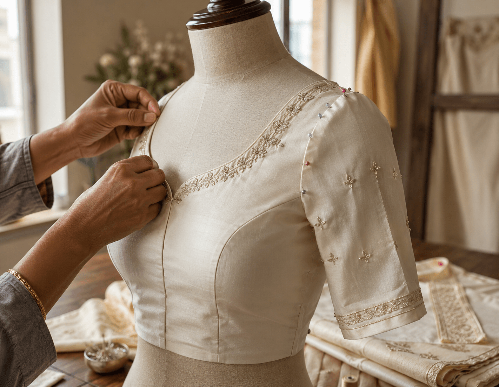
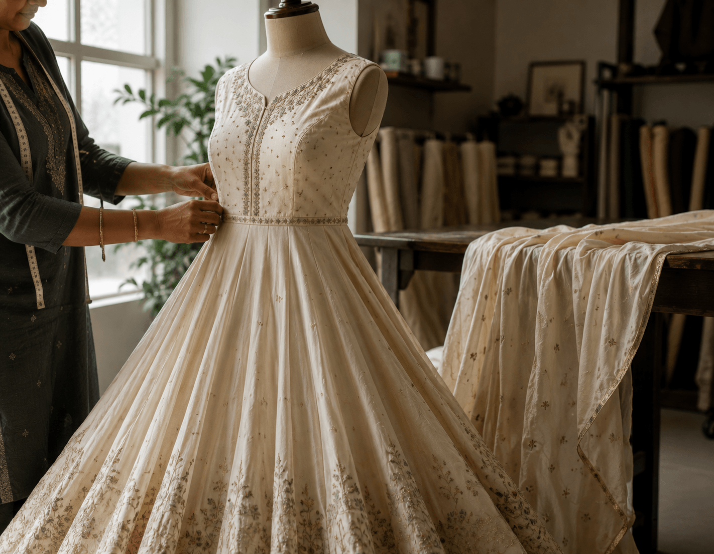
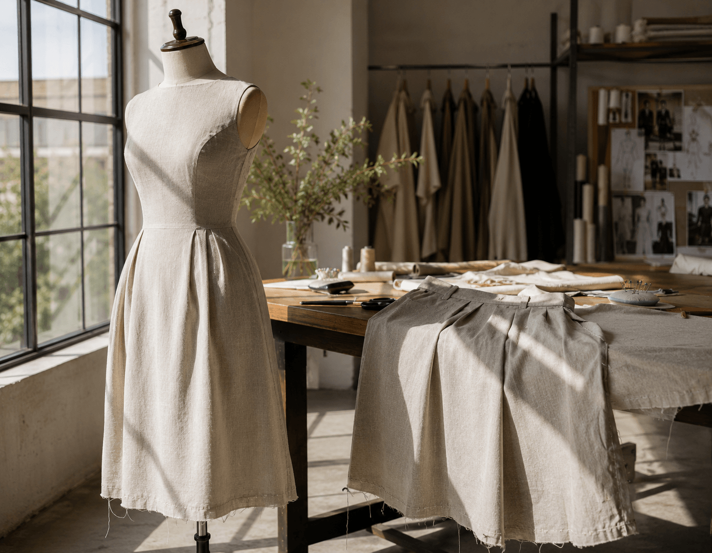
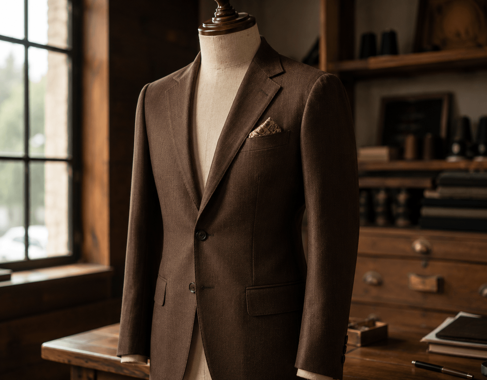
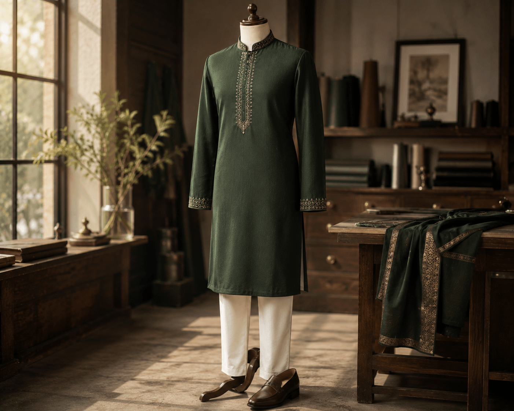
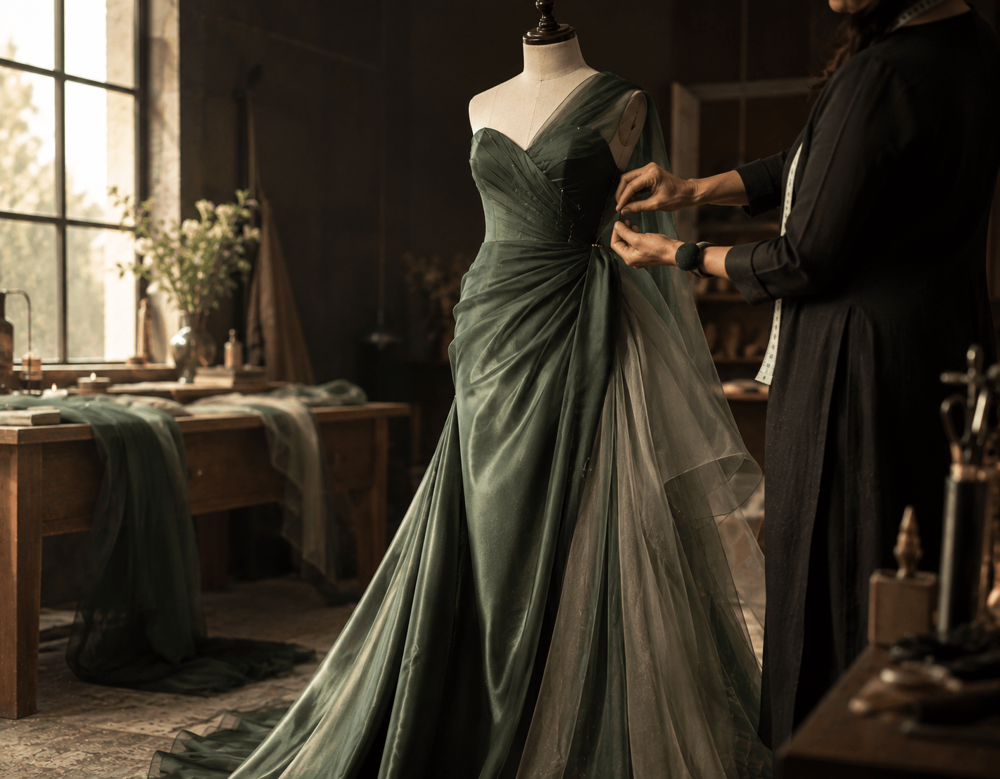
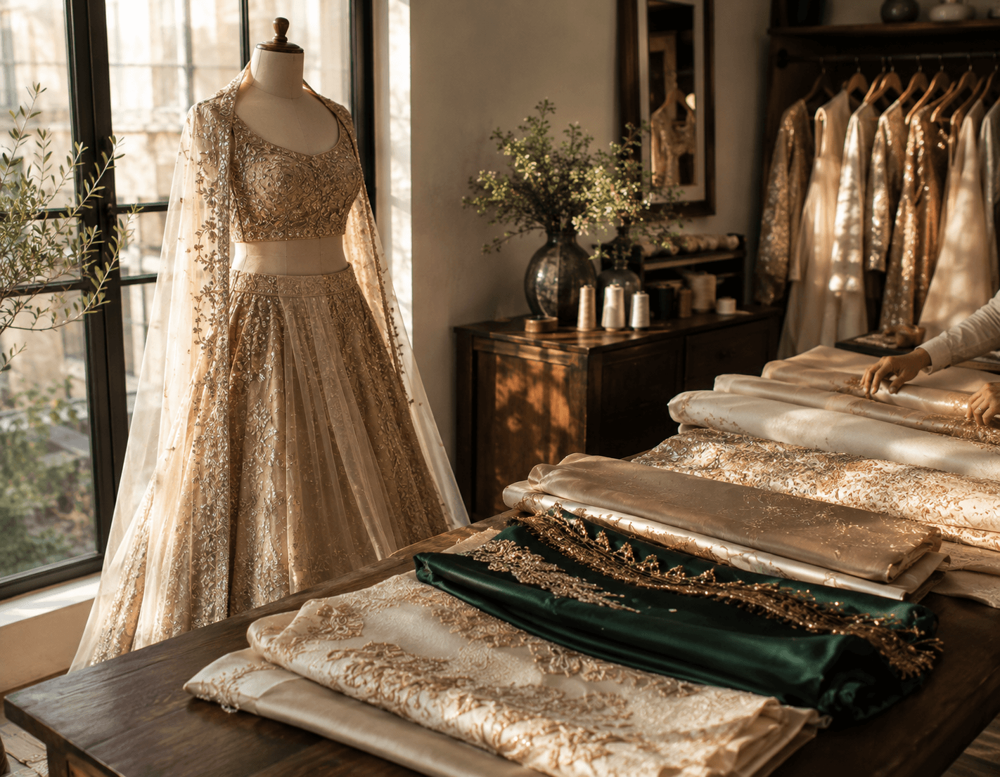
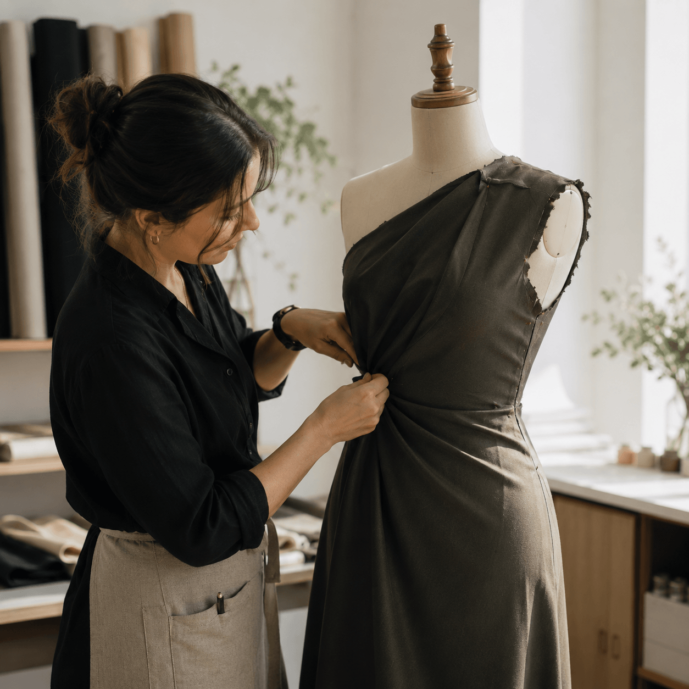

What We
Stitch for You
Select a category to explore all services in that area. Every service includes measurements, fittings, and expert finishing.

Blouse & Kurta Stitching
Our most popular women's service. We stitch custom blouses, kurtas and tops in any fabric — from everyday cotton to festive silk, with a precise custom finish.
- Neck, sleeve & back designs
- Embroidery & embellishment options
- Fabric-matching lining

Salwar Suit & Anarkali
Full salwar suit stitching including kameez, salwar and dupatta finishing. Available in all silhouettes — straight, A-line and flared, with careful hand detailing.
- Kameez, salwar & bottom types
- Custom length & flare
- Printed & embroidered fabric work

Dresses & Skirts
Custom-stitched Western and fusion dresses — shirt dresses, wrap dresses, maxi skirts and more. Designed to your measurements from first cut to final fitting.
- Casual to formal options
- Pockets on request
- Sustainable fabric options

Bespoke Suit & Blazer
Our flagship men's service. A fully bespoke suit crafted in your chosen fabric with hand-finished lapels, canvassed chest, and three fitting sessions.
- Single, double-breasted options
- Full or half canvas construction
- Pick stitching and hand-sewn details
Shirts & Trousers
Custom-fitted shirts in premium cotton, linen or oxford fabric. Paired with precisely cut trousers — formal, chino or relaxed — for work and special occasions.
- Collar, cuff & placket styles
- Monogram embroidery option
- Full break, half break trousers

Kurta & Traditional Wear
Elegant kurtas, sherwanis and traditional ensemble stitching for festivals, weddings and everyday wear — tailored with the same care as our formalwear.
- Kurta, churidar & pyjama sets
- Sherwani with embroidery
- Plain & printed fabrics

Gowns & Evening Wear
Elegant evening gowns, cocktail dresses and reception wear crafted in premium silk, chiffon and organza with couture-level attention to drape and fit.
- Floor-length & tea-length options
- Structured bodice and boning
- Custom embellishment and beadwork

Bridal Lehenga & Saree Blouse
Your wedding day is the most important fit of your life. Our bridal service includes multiple fittings, hand embroidery and two revision sessions for complete confidence.
- Lehenga, blouse & dupatta
- Heavy embroidery placement
- Corset & support construction

Garment Restyling
Breathe new life into existing garments. We restyle, restructure and reimagine pieces you love but no longer wear — giving them a second, better life.
- Silhouette modernisation
- Fabric addition or reduction
- Collar, sleeve & hem redesign
Estimated Turnaround
Times
We do not sacrifice quality for speed. These are our realistic turnaround estimates under normal conditions.
Hemming, button replacement, seam adjustments and basic repairs.
Blouses, kurtas, shirts and trousers with precise fitting.
Bespoke suits, blazers, structured gowns with multiple fittings.
Bridal and complex occasion wear — timeline set after design review.
Your Tailoring
Journey
Book Appointment
Book your appointment online or call us. We'll confirm your preferred date and time within 24 hours.
Design Consultation
Visit our studio for precise body measurements, fabric selection, and personalized style planning.
Precision Crafting
Our master tailors draft your bespoke pattern and construct your garment with hand finishing.
Fitting & Collection
Try on your finished piece during a final fitting session. Final fit adjustments are included at no extra cost.
What Sets Us
Apart
18+ Measurement Points
We take detailed measurements to capture the shape, balance and character of your individual fit.
Free Revision Fittings
Up to three fitting revisions included with every custom garment — at no extra cost to you.
60+ Premium Fabrics
From breathable summer cottons to structured suiting wools — our fabric range covers every need.
Quality Guarantee
Every garment is quality-inspected before delivery. Issues within 30 days are corrected free of charge.
Common
Questions
Have more questions? We're happy to help — call us or book a free consultation.
Contact Us
Ready for Your
Perfectly Fitted Garment?
Book your appointment today. Our first consultation is free and takes just 30 minutes.